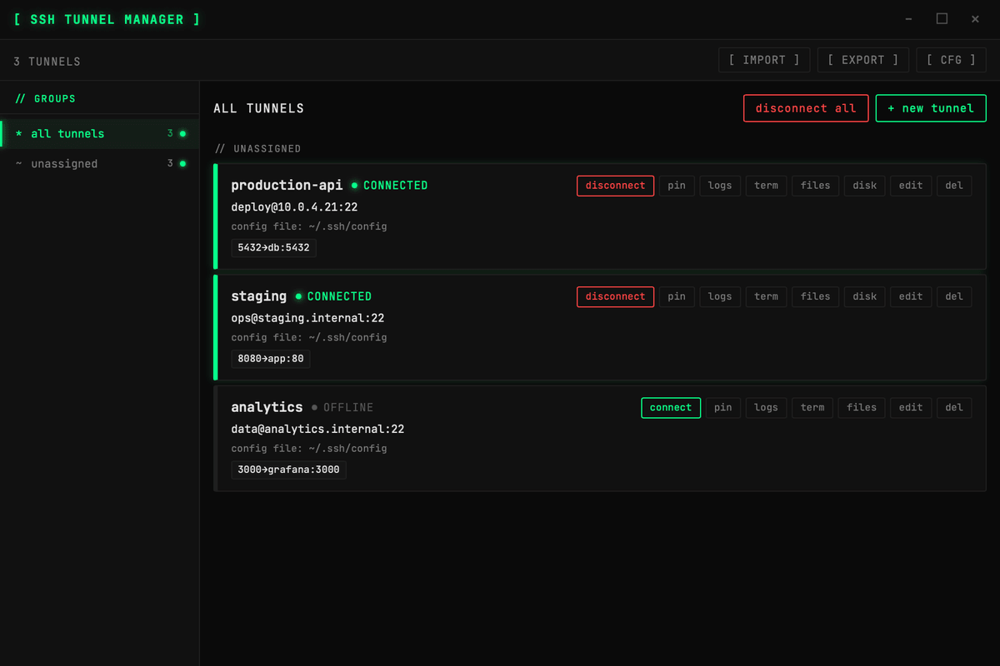
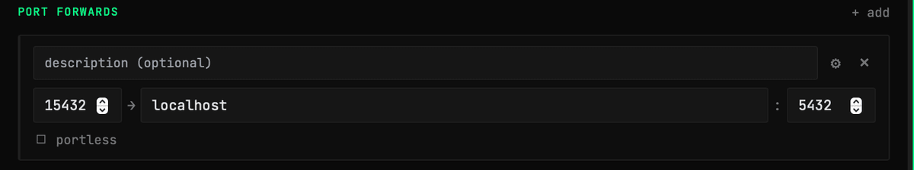
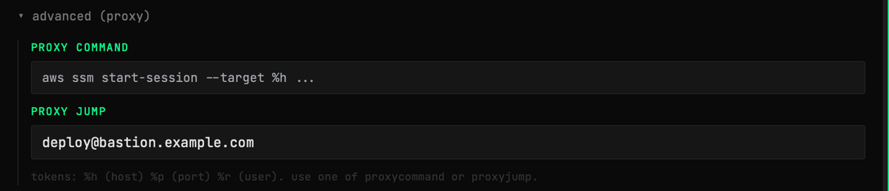
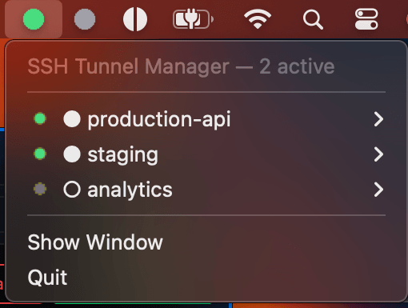
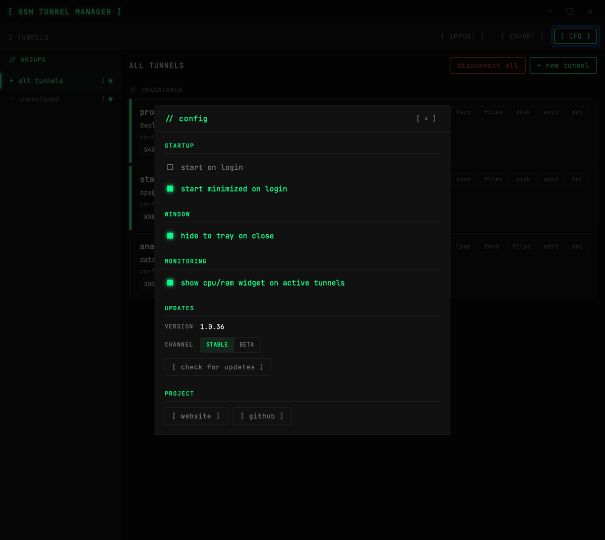
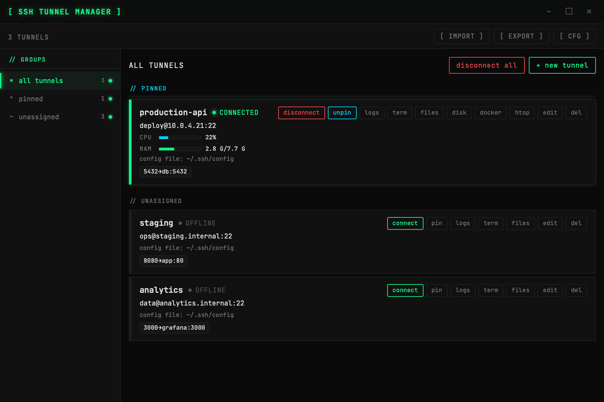
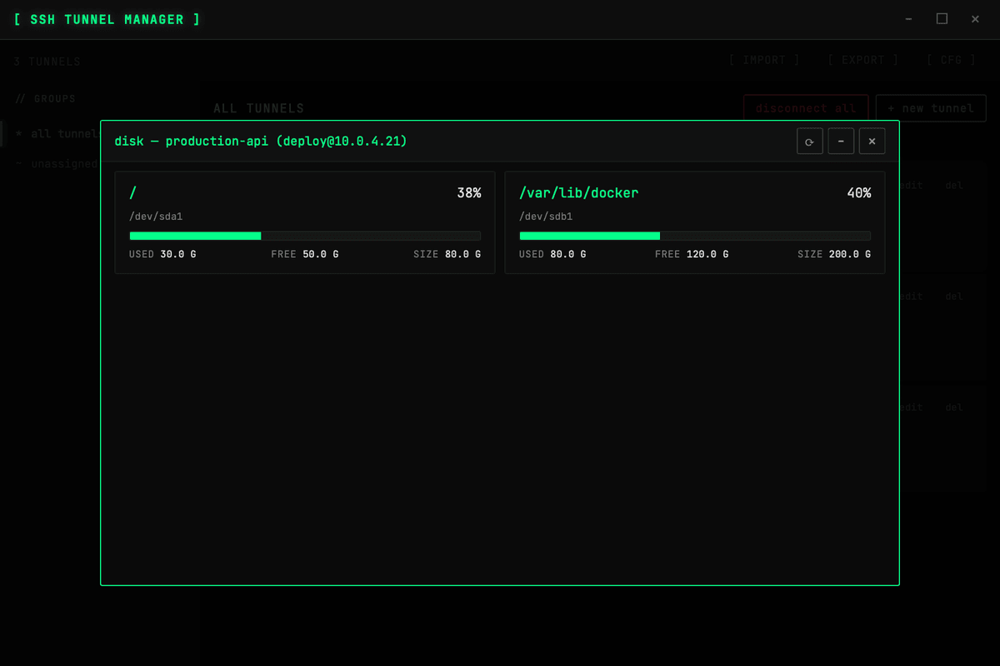
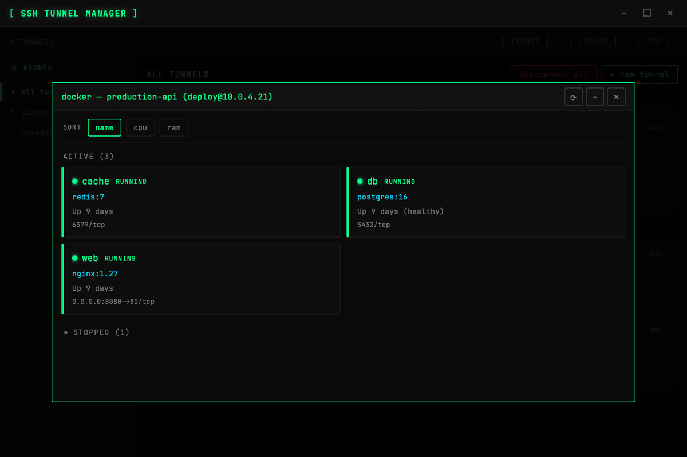

// FEATURES
Everything the app does today.
What SSH Tunnel Manager does in v1.0.36, one section per feature. Local port forwarding only for now: no SOCKS and no remote forwards.
Your tunnels live in ~/.ssh/config
Tunnels are stored as standard Host blocks with app metadata in comments, so ssh and git see the same entries. Hosts already in ~/.ssh/config load on first launch, and import and export to any SSH config file are built in.

Several local port forwards per tunnel
Map as many local ports to remote hosts as you need in one tunnel. Copy 127.0.0.1:port with one click, from the tunnel card or from the tray menu.

Hosts behind a bastion
Reach hosts behind a bastion with ProxyJump or ProxyCommand, set per tunnel in the advanced (proxy) section of the tunnel form.

Work from the system tray
Connect, disconnect and copy ports without opening the window. The tray icon shows the overall state: grey when everything is disconnected, green when a tunnel is connected and red when one has an error.

Connections that come back
Tunnels reconnect after network drops. Mark a tunnel to connect on startup, start the app on login (minimized to the tray by default) and keep it in the tray when you close the window.

Groups and pinned tunnels
Put tunnels into groups and connect or disconnect a whole group at once. Pin the tunnels you use most to keep them at the top of the list.
CPU, RAM and disk at a glance
Connected hosts show live CPU and RAM usage on the tunnel card; turn it on in Settings → Monitoring. The disk button lists mounted filesystems and how full they are.


Docker containers on the host
When Docker is installed on a connected host, a docker button opens its containers with status, image and published ports. Sort them by name, CPU or RAM.

Terminal and file browser
Open an interactive terminal on the host from the tunnel card. The files button browses the host over SFTP: download files and folders, upload, create folders, rename, delete and edit text files.
Logs and htop
Each tunnel keeps a log you can open from its card. When htop is installed on the host, an htop button runs it in a terminal window.
Portless: a name instead of a port
Tick portless on a forward to reach the service at a name under .ssh-local instead of 127.0.0.1:port. On macOS 13+ you approve the app's signed system service once; on Linux, ports below 1024 need the CAP_NET_BIND_SERVICE capability; Windows needs no extra step.
Authentication
Key files (RSA, ECDSA, Ed25519) with the passphrase kept in the OS keychain, a running ssh-agent, or the default keys in ~/.ssh. IdentityAgent from ~/.ssh/config is not read yet.
Updates from GitHub Releases
The app checks GitHub Releases on startup and tells you when a newer version is out. Install it from Settings or the tray menu, on the Stable channel or on Beta to get prereleases too.